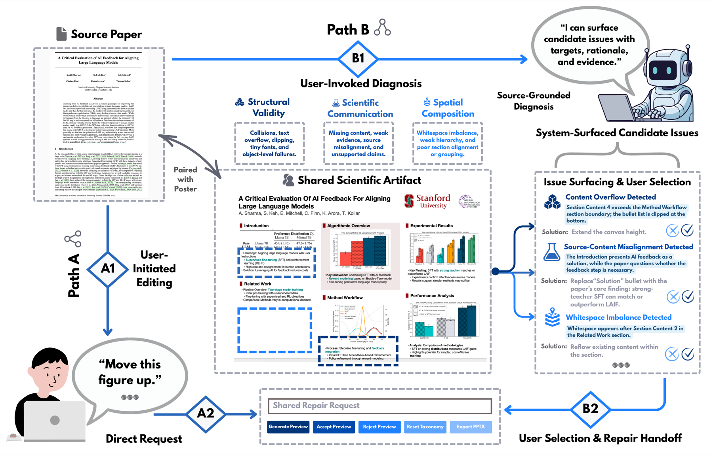
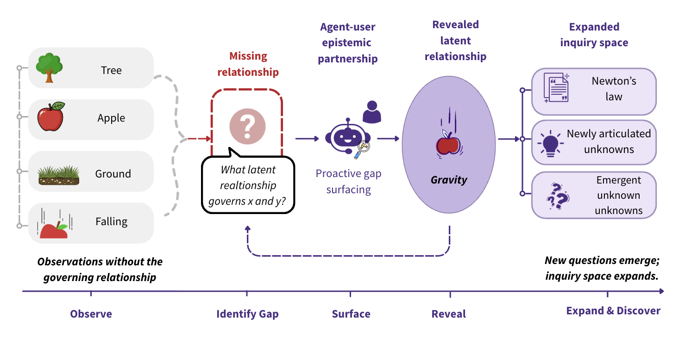
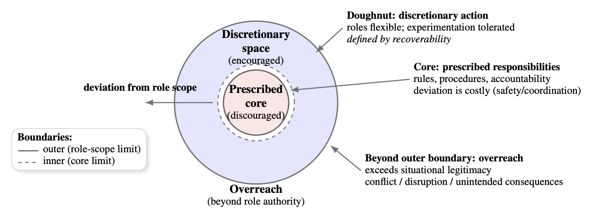

Preprint

Beyond Instruction-Driven Editing: Source-Grounded Problem Discovery with User-Governed Repair for Scientific Posters
, , , and .
Preprint, 2026 · CVPR HiGen Workshop
Hi! I am Xingda Lyu, a rising senior at the University of Washington pursuing dual B.S. degrees in Statistics and Informatics, and minor in Philosophy.
I conduct research with the UW NLP Group and am advised by Prof. Chirag Shah at the UW InfoSeeking Lab. I am also a summer research intern at the UIUC CS Data Mining Group, advised by Prof. Jiawei Han.
My current research focuses on three connected directions:
Outside of research, I play competitive badminton and speak English, Mandarin, and French, with English and Mandarin as my native languages.

, , , and .
Preprint, 2026 · CVPR HiGen Workshop



.
ACM CHIIR Workshop on Human-Centered Proactive & Personalized Agents, 2026.

, , , , and .
Amazon Research Day, AI Co-Scientist, 2026.
I work on AI for science, focusing on retrieval-augmented generation for retrosynthesis and drug discovery. I build and evaluate LLM/retrieval workflows for chemical reasoning and scientific decision support.
Advised by Prof. Jiawei Han.
I study epistemic AI agents for information seeking and human-AI collaboration. My work focuses on agents that model users' structural ignorance, navigate knowledge gaps, and build stronger epistemic partnerships under uncertainty.
Advised by Prof. Chirag Shah, with PhD mentor Kirandeep Kaur.
I study which short- and long-horizon action-effect-goal relationships actually drive an LLM's advice on consequential decisions that unfold over time. Using controlled interventions on relational structure, I test whether a model's recommendations are grounded in the relationships it articulates or driven by simpler heuristics.
In collaboration with Stella Li.

Data Science Intern
2025.06 - 2025.08 | Seattle, WA

Data Science Intern
2024.07 - 2024.09 | San Jose, CA